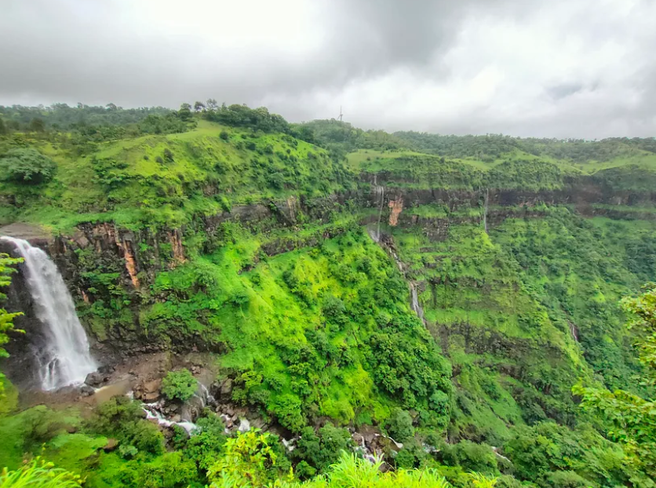
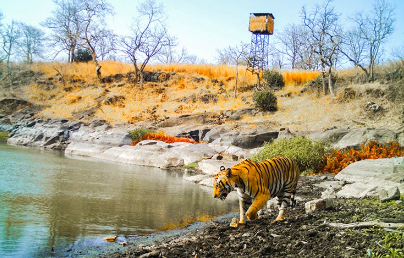
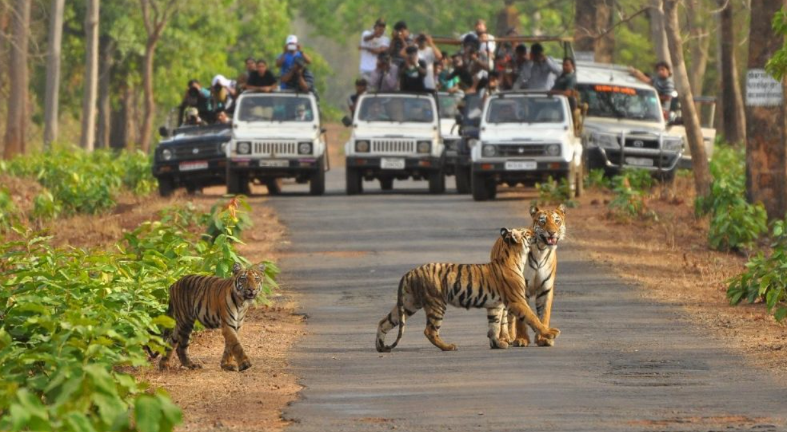

Chikaldara

Chikaldara is a scenic hill station in Maharashtra's Amravati
district, situated at about 1,067 meters (3,500 feet). Known for its
lush greenery and pleasant climate, it offers stunning landscapes
and historical sites like Gawilgarh Fort, making it a popular
retreat for nature lovers.
Melghat

Melghat is a wildlife sanctuary in the Satpura Range, also in
Amravati district. Home to the Melghat Tiger Reserve, it features
diverse flora and fauna, including tigers. With its beautiful hills
and valleys, Melghat is perfect for adventure seekers and those
wanting to experience local tribal culture.
Pench National Park

Pench National Park, located near the Maharashtra border in Madhya
Pradesh, is renowned for its diverse wildlife and healthy tiger
population. The park offers jeep safaris and is a paradise for
birdwatchers, with over 250 species. The ideal time to visit is from
October to June.